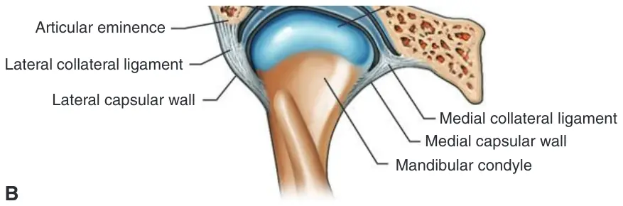
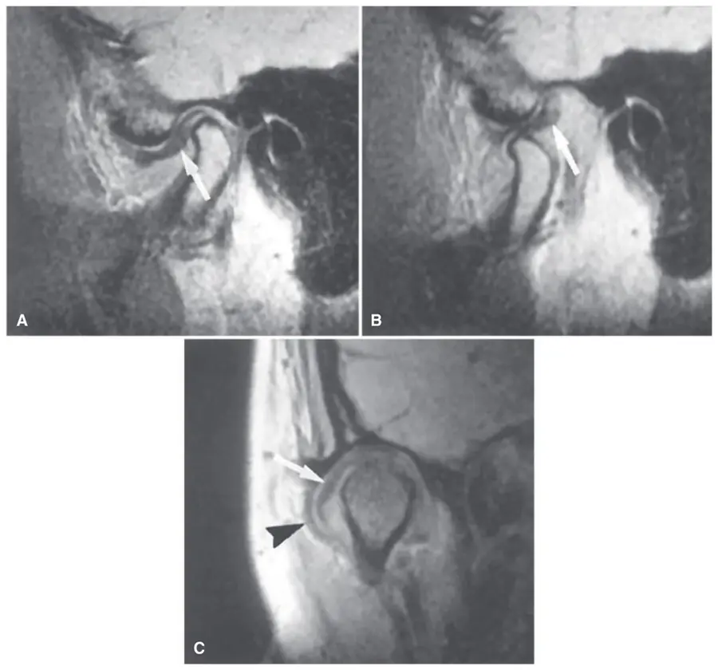

نسخه استخراجشده؛ ترجمه یا تأیید علمی انجام نشده است. وضعیت: captured
معاینهی بالینی دقیق میتواند بگوید کدام ساختار مقصر است — و این کل استراتژی تصویربرداری تو را تعیین میکند:

و کرپیتوس یک معنای ویژه دارد: «صدای خرد شدن یا سایش، به دژنراسیون استخوانی همراه با دیسکِ درازمدتِ بازنگردنده اشاره دارد.» پس کلیک یعنی دیسک، و کرپیتوس یعنی استخوان.
و یک نکتهی همهگیرشناسی: «بروز بالاتر اختلال TMJ در زنان گزارش شده، بهویژه در سالهای باروری و حوالی یائسگی، و تصور میشود این به تغییرات پیامرسانی استروژن مربوط باشد.»
و مهمترین جمله برای پرهیز از درمان بیش از حد: «در بیشتر موارد، علائم و نشانههای بالینی گذرا هستند، و اغلب درمانی فراتر از اطمینانبخشی و آموزش بیمار اندیکاسیون ندارد. ولی درصد کوچکی — حدود ۵٪ — دیسفانکشن شدید دارند که پیش از درمان به بررسی تشخیصی کامل از جمله تصویربرداری نیاز دارد.»
و حالا خود دیسک. دیسک اینترآرتیکولار از فیبروکارتیلاژ بدون عروق ساخته شده و حفرهی مفصلی را به دو بخش فوقانی و تحتانی تقسیم میکند. شکلش مقعرالطرفین است با باند قدامی ضخیم، باند خلفی ضخیمتر، و ناحیهی میانی نازک. و در سمت داخلی ضخیمتر از سمت خارجی است.
و موقعیت طبیعیاش را با ساعت به خاطر بسپار: «در وضعیت دهان بسته، باند خلفی مجاور سطح فوقانی کندیل یا کمی جلوتر از آن، در موقعیت ساعت ۱۱ قرار دارد.»
و اتصالاتش: محیط دیسک با الیاف سطح داخلی کپسول مفصلی ادغام میشود، لیگامانهای کولترال داخلی و خارجی دیسک را زیر قطبهای داخلی و خارجی کندیل لنگر میاندازند، باند قدامی به برخی الیاف سر فوقانی عضلهی پتریگوئید خارجی میچسبد، و باند خلفی به بافتهای رترودیسکال.
و بافت رترودیسکال، منبع درد است: از لامینای فوقانی و تحتانی ساخته شده که ناحیهای از بافت عروقی سست را در بر میگیرند — ناحیهی دولایه. لامینای فوقانی سرشار از الاستین است و به صفحهی تیمپانیک میچسبد؛ هنگام باز شدن کش میآید و هنگام بستن، بازگشت نرم دیسک را ممکن میکند. و «بافتهای رترودیسکال عصبرسانی خوبی دارند و میتوانند منبع درد باشند وقتی اتصال خلفی میان کندیل و برجستگی مفصلی گیر میافتد».
یک جمله که کل این درس را قفل میکند: «دیسک مفصلی با تصویربرداری تخت، CBCT یا MDCT قابل مشاهده نیست؛ MRI روش انتخابی است.»

و روی MRI: دیسک طبیعی نسبت به سیگنال فضای مفصلی اطرافش سیگنال پایین دارد — یعنی تیرهتر است. در مقابل، شدت سیگنال اتصال خلفی معمولاً بالاتر است — یعنی روشنتر.
و شکلش روی مقطع ساژیتال اصلاحشده: دیسک مقعرالطرفین طبیعی شکل «پاپیون» دارد. و قاعدهی طلایی موقعیت: «در همهی وضعیتهای باز شدن دهان، ناحیهی میانی نازک باید میان کندیل و برجستگی مفصلی باقی بماند.»
و تعریف دقیق جابهجایی قدامی: «دیسک وقتی جابهجاشدهی قدامی به شمار میرود که باند خلفیاش جلوتر از موقعیت طبیعی باشد و ناحیهی میانی نازک دیگر میان کندیل و برجستگی مفصلی نباشد.» جابهجایی قدامی شایعترین نوع است؛ جابهجایی قدامی-داخلی، داخلی و قدامی-خارجی هم رخ میدهد، ولی خارجی و خلفی بسیار نادرند.
و طیف شدت: از جابهجایی جزئی خفیف — که باند خلفی میان کندیل و برجستگی قرار میگیرد — تا دررفتگی کامل شدید که باند خلفی بسیار جلوتر از سر کندیل است. در جابهجایی شدید ممکن است تا خوردن جزئی دیسک در فضای مفصلی قدامی دیده شود.
و مهمترین جفت اصطلاح این یونیت — بازگشت و عدم بازگشت: هنگام باز شدن دهان، دیسک جابهجاشدهی قدامی ممکن است رابطهی طبیعیاش را با سر کندیل بازیابد. این بازگشت دیسک است، و «اغلب با یک کلیک شنیدنی همراه است وقتی سر کندیل با ناحیهی میانی دیسک تماس میگیرد». تشخیصش روی MRI: جابهجاشده در نمای دهان بسته، طبیعی در نمای دهان باز. و اگر روی باز شدن جابهجا بماند، بازنگردنده است.
و یک اشتباه تفسیری رایج: «تغییرات فیبروتیک اتصال خلفی دیسک جابهجاشده میتواند سیگنال بافتیاش را به سیگنال دیسک نزدیک کند. در چنین مواردی، ممکن است بهاشتباه تفسیر شود که دیسک در حداکثر باز شدن موقعیت طبیعی دارد.» راه بیرون آمدن: «شناسایی بافت اضافی با سیگنال پایین در جلوی سر کندیل — که همان بافت واقعی دیسک است — به تأیید حالت بازنگردنده کمک میکند.»
و پیامدهای درازمدت: دیسک مزمناً جابهجا میتواند تغییر شکل دائمی بدهد و شکل مقعرالطرفین را از دست بدهد — از بزرگ شدن باند خلفی تا خطنمای دولاینی یا محدبالطرفین. و «تغییرات کندیل و جزء گیجگاهی سازگار با DJD اغلب موارد دیسکهای درازمدت جابهجاشده را همراهی میکنند».
و پرفوراسیون، جای مشخصی دارد: «پرفوراسیون میان فضاهای مفصلی فوقانی و تحتانی بیشتر در بافت رترودیسکال، درست پشت باند خلفی رخ میدهد.» از دست رفتن فضای مفصلی و تماس استخوان-به-استخوان به آن اشاره دارد، ولی «آرتروگرافی شواهد قابلاعتمادتری فراهم میکند».
و دو یافتهی همراه: چسبندگیهای فیبروز — تودههای بافت فیبروز یا اسکار در فضای مفصلی، بهویژه پس از جراحی TMJ، که میتوانند «دیسک گیرکرده» و قفل بسته بسازند، و افیوژن مفصلی که «تغییری زودهنگام است و میتواند بر DJD مقدم باشد» و روی تصاویر T2 به شکل ناحیهای با سیگنال بالا دیده میشود.
و درمان، با یک شرط شروع میشود: «مدیریت دیسک جابهجاشدهی بیعلامت اندیکاسیون ندارد.» در بیماران علامتدار، نخست درمان محافظهکارانه و غیرتهاجمی؛ «علائم بیشتر بیماران با گذشت زمان برطرف میشود». آرتروسکوپی یا آرترومنتز برای آزاد کردن چسبندگیها، و جراحی باز مفصل تنها برای موارد مقاوم.